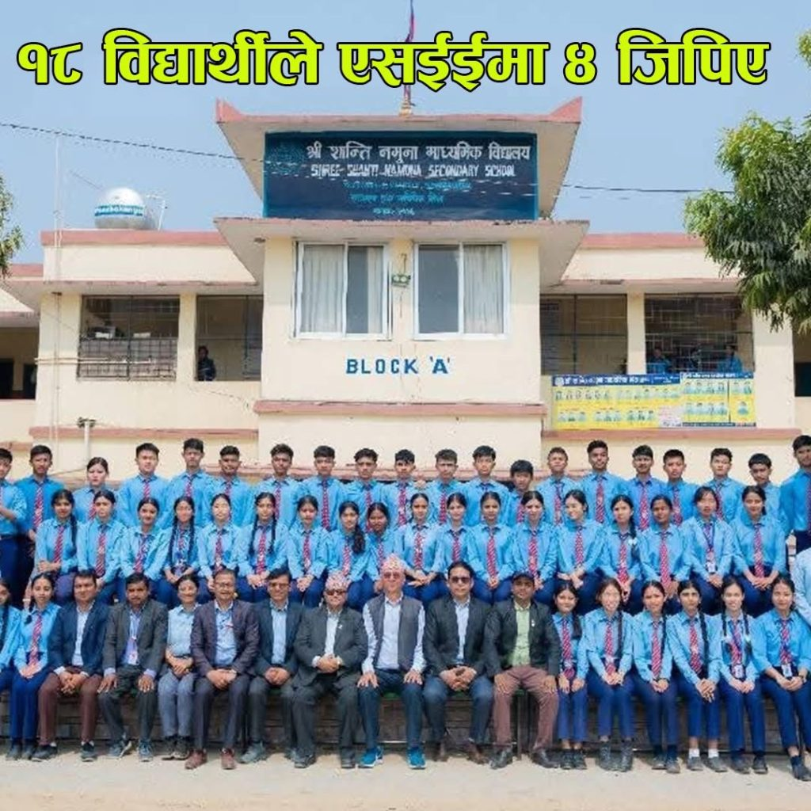
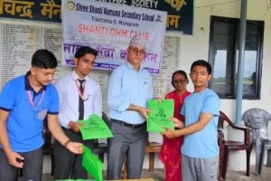
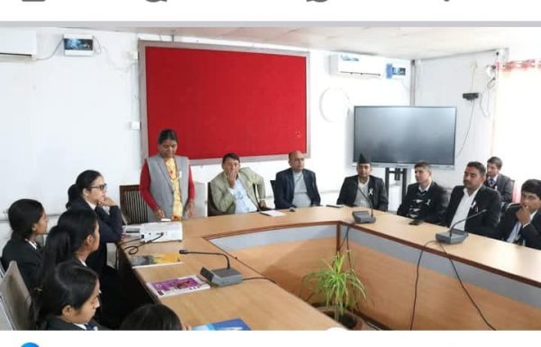
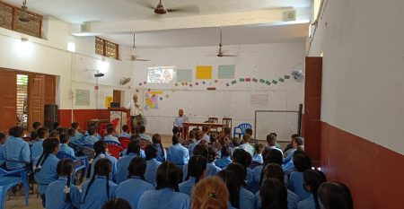

Conceptualized in 2003 B.S. via a thatched roof hut with the pious venture of local academicians, social workers, and donors, Shanti Namuna Higher Secondary school is a government school sited at Tilottama Municipality ward no. 6, Rupandehi, Western Nepal (midpoint of Butwal-Bhairahawa section of Siddhartha Highway). However, it got official recognition only in 2016 B.S. The students of this school appeared in SLC in 2024 B.S. for the first time and currently more than 200 students appear in SLC every year. The school launches its academic program in both English and Nepali medium from Montessori to +2 levels in its own well facilitated building with spacious and ventilated rooms, multipurpose playground within its premises.
A glimpse of some important chronology of the school.
Conceived;- 2003 BS
Officially registered:- 2016 BS
Secondary School:- 2023 BS
Vocational School:- 2025 BS
Namuna School:- 2034 BS
Initiation of English Medium:- 2067 B.S
Selected as a Model School by Ministry of education:- 2073 B.S Home Events Latest news Contacts
PRINCIPAL MESSAGE
Greeting to all.my name is Kul Prasad LamichaneCentrally located in Tilottama Municipality, Ward No. 5 of Rupandehi district, Shanti Namuna Secondary School in its tranquil academic environment offers general education (from Montessori to +2 levels in both Nepali and English medium), TSLC program (as ANNEX program to CTEVT) and special education with hostel facility to the blind.
Achievements
शान्ति नमुना माध्यमिक विद्यालयबाट एसइईमा १८ जना विद्यार्थीले ४ जिपिए प्राप्त|

रूपन्देहीको तिलोत्तमा ५ स्थित शान्ति नमुना माध्यमिक विद्यालयबाट एसइईमा १८ जना विद्यार्थीले ४ जिपिए प्राप्त गरेको विद्यालयको दाबी
१८ बिद्यार्थीको नामावली ः
१. सर्वदा विश्वकर्मा
२. मोहम्मद रेहान खान
३. सरिता यादव
४. सेवा रेग्मी
५. स्वप्निल गैह्रे
६. सेलिना लामा
७. सौगात पाण्डे
८. सुसन पंगेनी
९. अनिल ज्ञवाली
१०. अप्सन पौडेल
११. सुजल घिमिरे
१२. शिशिर भुसाल
१३. शिवानी डुम्रे
१४. सुसान्त अर्याल
१५. आशिष पाण्डे
१६. अनिश भुसाल
१७. सन्देश न्यौपाने
१८. किस्मत थापा
Latest news

तिलोत्तमा-५ मणिग्राम स्थित शान्ति नमुना माध्यमिक विद्यालयमा डीएचएम दोस्रो र चौथो सेमेस्टरमा अध्ययनरत विद्यार्थीहरूले अनाथ आश्रममा शैक्षिक तथा खेलकुद सामग्री हस्तान्तरण गरेका छन्।
रामचन्द्र मैनादेवी आश्रममा आश्रित बालबालिकाहरूका लागि शैक्षिक तथा खेलकुद सामग्री वितरण गरिनुका साथै खाना खुवाउने कार्यक्रम गरिएको हो। डिएचएम क्लबका अध्यक्ष सुशांक पैनीको अध्यक्षता तथा प्रधानाध्यापक कुलप्रसाद लामिछानेको आतिथ्यतामा भएको कार्यक्रममा आश्रमका संस्थापक अध्यक्ष मैनादेवी भण्डारी, विद्यालयका सहायक प्रधानाध्यापक लोकनाथ कँडेल, डीएचएम संयोजक भोजराजस्ती लगायत डीएचएम दोस्रो र चौथो सेमेस्टरका विद्यार्थीहरु सहभागी भएका थिए।
कार्यक्रमको संचालन डी एच एम क्लबका सदस्य संदेश ढुङ्गानाले गरेका थिए । आश्रममा हाल १३ जना बालबालिकाहरू आश्रित छन्।

स्थानीय तह मा कानून निर्माण प्रक्रिया,न्यायिक समितिवाट हुने न्याय निरूपण लगायतका का विविध बिषय मा अन्तरक्रिया कार्यक्रमा शान्ति नमुना मा वी मा अध्यनरत कक्षा 11 र 12 का कानून समुह का विद्यार्थीको साथ मा मेयर रामकृष्ण खाड, उपमेयर जागेश्वरी देवी चौधरी, प्रशासकीय अधिकृत गंगा राम अर्याल को साथ मा सहपाठी शिक्षक मित्र हरू (तिलोत्तमा नगर पालिका)
Vision
Our vision aligns with shifts in the global Creativity, innovation, and a desire to challenge the status quo, both in what and how we teach and in the intellectual ambitions of the school itself.
Missions
We will also lead in generating practical and theoretical knowledge that enables people to better understand our world and improve conditions for local and global communities.
Objectives
To apply teaching /learning through enthusiasm and amusement but not pressure. To promote the essence of self dependence, problem solving ,moral behavior and dedication.
Events
upcoming
the annuual anniversary of this school is coming. you can watch th plan of our school by clicking the given word.
expired

06,July
सीप कार्यक्रम अन्तर्गत प्राङ्गगारिक मल बनाउन गड्याैला पालन|